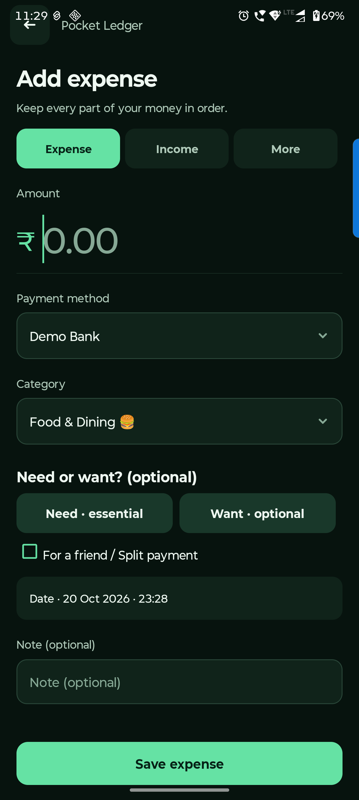
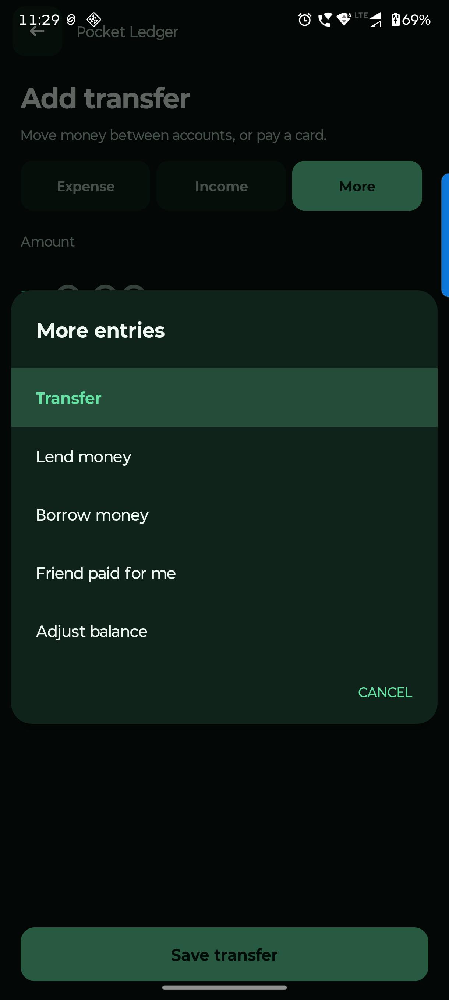

Android handbook · 6.1.0-preview.14
Record money moves.
Expenses, income, transfers and purchase refunds.
Home → + → Expense
Record an everyday expense.
Choose what you paid with and why you spent it. The account balance and personal spending update together.
Enter the total amount
Use the full payment amount. Choose the account or linked UPI/debit payment name that paid it.
Pick a category and optional tag
Category describes what it was. Need / Want describes your choice. Leave the tag empty if you are unsure.
Check the date and save
Add a useful note, check the date/time and tap Save expense. Use the shared-payment option only when part belongs to a friend.
For quicker entry, use the resizable Add Expense widget or the Quick Settings tile. Widget setup is in Settings → Add home screen widget.

Home → + → Income or More
Choose the right money move.
Income, transfers and refunds have different jobs. Choosing the right one keeps spending meaningful.
Income: new money received
Choose Income, the receiving account, category and amount. Use it for salary or other new income.
Transfer: your money changing place
Choose More → Transfer. Select different source and destination accounts. Use this for bank-to-cash moves and credit-card payments.
Refund: money returned for a purchase
Open the original expense from Activity and choose its refund action. Record the amount and receiving account; allocate personal/friend shares when needed.
Use More → Adjust balance only to correct a balance, with a reason. Use Lena / Dena for loans and linked repayments.

Questions you might have.
How do I correct an entry?
Open Activity and tap the entry. Edit the amount, account, category or note, then save. Linked refunds and repayments can limit changes to shared originals; correct the linked records first.
Is buying for a friend an ordinary expense?
Use the shared-payment option and allocate your share and their share. Set yours to zero when all of the purchase belongs to the friend. Only your share counts as personal spending.